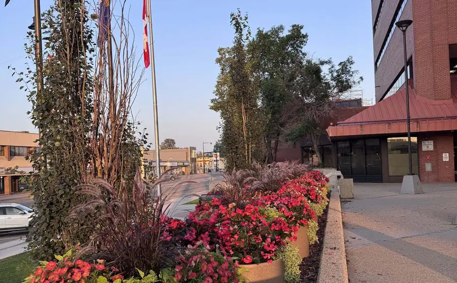

PIN-protected — changes made here go live immediately.
Edits are saved on this device. Add or change a place, then Export backup to move it to another computer or send it to your developer.
Hold Ctrl (Windows) or Cmd (Mac) to pick more than one category — the business will show up under every category selected.
Loading businesses...